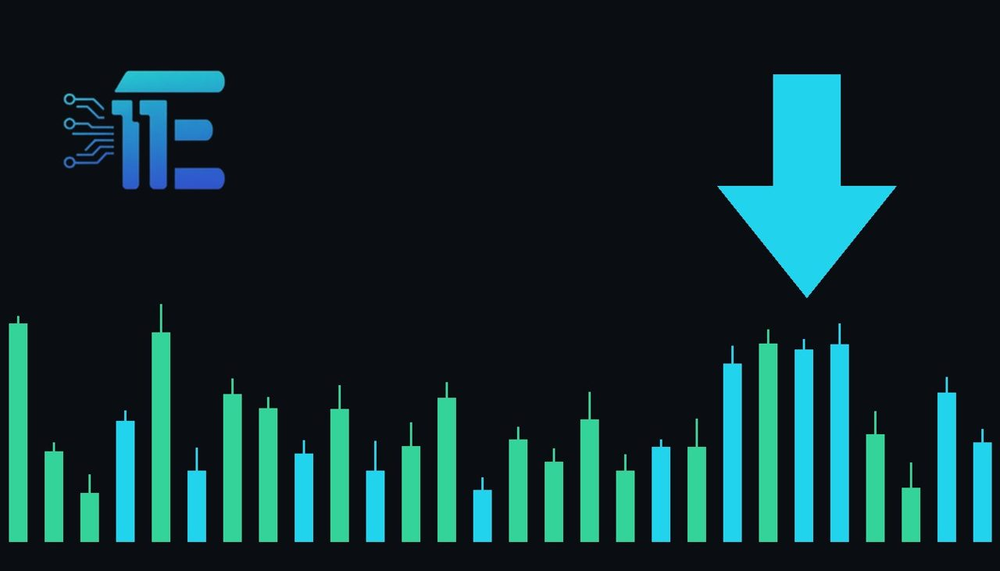

Gold Slides Toward $4,000 as Haven Demand Weakensតម្លៃមាសធ្លាក់ចុះឆ្ពោះទៅ $4,000 ខណៈតម្រូវការទ្រព្យសុវត្ថិភាពថមថយ
XAU/USD impact: ▼ Bearishផលប៉ះពាល់លើ XAU/USD: ▼ ធ្លាក់

Gold prices dropped toward $4,000 even as equity markets sold off and Treasuries gained ground. The breakdown in traditional safe-haven behavior puts intense focus on the upcoming Federal Reserve policy decision.
តម្លៃមាសបានធ្លាក់ចុះឆ្ពោះទៅ $4,000 បើទោះបីជាទីផ្សារភាគហ៊ុនបានដាំក្បាលចុះ ហើយមូលបត្របំណុល Treasuries បានកើនឡើងក៏ដោយ។ ការប្រែប្រួលនៃឥរិយាបថទ្រព្យសុវត្ថិភាពនេះ ធ្វើឱ្យការសម្រេចចិត្តរបស់ Fed កាន់តែមានឥទ្ធិពលសំខាន់ចំពោះ XAU/USD។
Gold prices tumbled back toward the $4,000 mark even as traditional safe-haven conditions unfolded across global financial markets. Equities experienced a notable sell-off, while government Treasuries rallied, but bullion failed to attract its customary protective flows and collapsed instead.
តម្លៃមាសបានធ្លាក់ចុះយ៉ាងខ្លាំងត្រឡប់ទៅរកកម្រិត $4,000 វិញ បើទោះបីជាលក្ខខណ្ឌទ្រព្យសុវត្ថិភាពបែបប្រពៃណីបានកើតឡើងនៅទូទាំងទីផ្សារហិរញ្ញវត្ថុក៏ដោយ។ ទីផ្សារភាគហ៊ុនបានជួបប្រទះនឹងការលក់ចេញយ៉ាងខ្លាំង ខណៈដែលមូលបត្របំណុលរដ្ឋាភិបាល Treasuries បានឡើងថ្លៃ ប៉ុន្តែមាសបែរជាមិនអាចទាក់ទាញលំហូរទុនការពារហានិភ័យ ហើយបានដាំក្បាលចុះទៅវិញ។
The decline challenged a longstanding market relationship where investors turn to physical gold as a refuge during episodes of market panic. Instead of moving higher alongside advancing Treasuries, bullion faced heavy downward momentum, reflecting a fundamental reassessment of how market participants evaluate risk and fear.
ការធ្លាក់ចុះនេះបានបំបែកក្បួនច្បាប់ទីផ្សារដែលមានជាយូរមកហើយ ដែលជាទូទៅវិនិយោគិនតែងតែងាកមករកមាសជាទ្រព្យសម្បត្តិសុវត្ថិភាពនៅពេលទីផ្សារមានការភ័យស្លន់ស្លោ។ ផ្ទុយពីការកើនឡើងស្របតាម Treasuries មាសបានរងសម្ពាធធ្លាក់ចុះយ៉ាងខ្លាំង ដែលឆ្លុះបញ្ចាំងពីការផ្លាស់ប្តូររបៀបដែលអ្នកជួញដូរកំពុងគិតគូរលើកម្រិតហានិភ័យ និងការភ័យខ្លាច។
Treasury bond rallies typically signal risk aversion, yet the divergence in precious metals indicates that capital sought liquidity and sovereign debt rather than non-yielding gold. If market stress continues to favor Treasuries over bullion, gold could face sustained selling pressure. Conversely, if bargain hunters or traditional haven seekers return to the metal near major support levels, prices could stabilize.
ការឡើងថ្លៃនៃមូលបត្របំណុល Treasuries ជាធម្មតាបង្ហាញពីការគេចចេញពីហានិភ័យ ប៉ុន្តែគម្លាតនៃលោហៈធាតុមានតម្លៃនេះបង្ហាញថាលំហូរទុនបានជ្រើសរើសសាច់ប្រាក់ងាយស្រួល និងបំណុលរដ្ឋជាជាងមាសដែលគ្មានការប្រាក់។ ប្រសិនបើសម្ពាធទីផ្សារបន្តផ្តល់ផលវិជ្ជមានដល់ Treasuries ជាជាងមាស នោះមាសអាចនឹងប្រឈមមុខនឹងសម្ពាធលក់បន្តទៀត។ ផ្ទុយទៅវិញ ប្រសិនបើអ្នកទិញទ្រព្យសុវត្ថិភាពបែបប្រពៃណីវិលត្រឡប់មកវិញ មាសអាចនឹងរក្សាស្ថិរភាពឡើងវិញ។
Traders are now turning their attention toward the upcoming Federal Reserve policy decision scheduled for October 28. The central bank's outcome and guidance are viewed as a decisive test that could determine whether this breakdown in gold's traditional safe-haven appeal becomes a lasting market reality.
ពេលនេះ អ្នកជួញដូរកំពុងផ្តោតការយកចិត្តទុកដាក់លើការសម្រេចចិត្តលើគោលនយោបាយរបស់ Fed ដែលគ្រោងនឹងធ្វើឡើងនៅថ្ងៃទី 28 ខែតុលា។ លទ្ធផលនិងការណែនាំពីធនាគារកណ្តាលមួយនេះ ត្រូវបានចាត់ទុកថាជាចំណុចរបត់ដ៏សំខាន់មួយដែលអាចកំណត់ថាតើការបាត់បង់ភាពទាក់ទាញនៃមាសជាទ្រព្យសុវត្ថិភាពនេះ នឹងក្លាយជាការពិតយូរអង្វែងនៅក្នុងទីផ្សារឬយ៉ាងណា។
Key takeawaysចំណុចសំខាន់ៗ
- Gold dropped back toward $4,000 despite simultaneous equity declines and a Treasury bond rally.
- មាសបានធ្លាក់ចុះឆ្ពោះទៅរក $4,000 បើទោះបីជាភាគហ៊ុនធ្លាក់ចុះ ហើយមូលបត្របំណុល Treasuries កើនឡើងក៏ដោយ។
- The typical pattern of bullion advancing during periods of panic broke down as fear pricing shifted.
- ទំនាក់ទំនងធម្មតាដែលមាសតែងតែកើនឡើងនៅពេលមានការភ័យស្លន់ស្លោក្នុងទីផ្សារ ត្រូវបានបំបែក។
- Market participants are focusing on the October 28 Federal Reserve decision to assess the trend's duration.
- អ្នកជួញដូរកំពុងរង់ចាំការសម្រេចចិត្តរបស់ Fed នៅថ្ងៃទី 28 ខែតុលា ដើម្បីវាយតម្លៃពីនិន្នាការបន្ត។
Original commentary by THE MARKET CODE, based on public reporting from Yahoo! Finance: GC=F News. Written with the help of AI. Educational only, not financial advice.
មតិវិភាគដើមដោយ THE MARKET CODE ផ្អែកលើការរាយការណ៍សាធារណៈពី Yahoo! Finance: GC=F News។ សរសេរដោយមានជំនួយពី AI។ មាតិកាអប់រំប៉ុណ្ណោះ មិនមែនជាដំបូន្មានហិរញ្ញវត្ថុទេ។